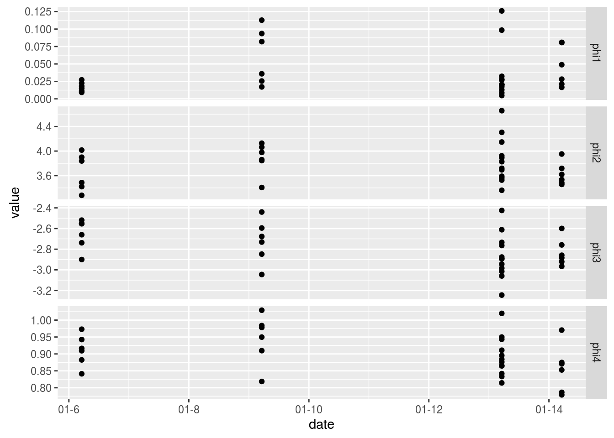

-
Interactive vizualisation of parametric curves with GGobi and Cranvas
2015-12-23
SourceThis article shows an example of interactive data visualization in R using GGobi and its successor Cranvas. A very interesting feature of these two visualization tools is their ability to link two different datasets, and this is such an example I provide here.
Firstly I am going to fit some parametric curves to a set of data, and then I will show how to create interactive and linked plots of these curves on one graphic and of their parameters on another graphic.
Loading data and fitting the curves
Assume for example we have some data with an input variable in the first column and each other column, corresponding to an experiment, contains the values of a measurement made for each value of the input:
library(dplyr) # I use the dplyr format for a better printing dat0 <- read.csv("./data/GGobiFPLdat0.csv") %>% tbl_df print(dat0, n=5) ## Source: local data frame [12 x 31] ## ## concentration M01 M02 M03 M04 M05 M06 M07 M08 ## (dbl) (dbl) (dbl) (dbl) (dbl) (dbl) (dbl) (dbl) (dbl) ## 1 0.20125000 2.554 2.605 2.784 2.839 2.865 2.926 3.009 3.225 ## 2 0.10062500 2.098 2.059 2.191 2.292 2.361 2.295 2.430 2.464 ## 3 0.05031250 1.392 1.409 1.477 1.444 1.717 1.478 1.697 1.720 ## 4 0.02515625 0.833 0.843 0.939 0.943 0.905 0.893 1.045 1.052 ## 5 0.01257813 0.473 0.453 0.504 0.500 0.572 0.482 0.613 0.592 ## .. ... ... ... ... ... ... ... ... ... ## Variables not shown: M09 (dbl), M10 (dbl), M11 (dbl), M12 (dbl), M13 ## (dbl), M14 (dbl), M15 (dbl), M16 (dbl), M17 (dbl), M18 (dbl), M19 (dbl), ## M20 (dbl), M21 (dbl), M22 (dbl), M23 (dbl), M24 (dbl), M25 (dbl), M26 ## (dbl), M27 (dbl), M28 (dbl), M29 (dbl), M30 (dbl)In this example we fit a four-parameter logistic curve for each of the outcome columns:
# first melt the data library(tidyr) ldat0 <- dat0 %>% gather(experiment, value, -concentration) # fit library(nlme) fit <- nlsList(value~SSfpl(log(concentration), phi1, phi2, phi3, phi4) | experiment, data=ldat0, na.action=na.omit) Params <- coef(fit) Params %>% glimpse(width=70) ## Observations: 30 ## Variables: 4 ## $ phi1 (dbl) 0.022468669, 0.011273365, 0.009305653, 0.018190190, ... ## $ phi2 (dbl) 3.279374, 3.420839, 3.838880, 3.900045, 3.487184, 4.... ## $ phi3 (dbl) -2.737833, -2.659785, -2.551294, -2.553739, -2.90006... ## $ phi4 (dbl) 0.8823794, 0.9093874, 0.9731057, 0.9425553, 0.841277...Recall that the four-parameter logistic curve is defined by \[ y = \phi_1 + \frac{\phi_2-\phi_1}{1+\exp\left(\dfrac{\phi_3-x}{\phi_4}\right)}. \] It can be shown on the figure below, taken from the book Mixed Effects Models in S and SPlus by Pinheiro and Bates.
Some softwares such as SAS and SoftmaxPro use a different parametrization of the four-parameter logistic function: instead of \(\phi_1\), \(\phi_2\), \(\phi_3\), \(\phi_4\), they use four parameters denoted by \(A\), \(B\), \(C\), \(D\) and the relations between these two different parameterizations are \[ A=\phi_1, \qquad \frac{1}{B}=\phi_4, \qquad \log C = \phi_3, \qquad D=\phi_2. \] If you prefer this parametrization, then you could do
SSfpl(log(concentration), A, D, logC, inverseB)in thenlsListfunction above.Now, another dataset provides some information about the experiments, such as the date, and we merge it with the fitted parameters:
( dat1 <- read.csv("./data/GGobiFPLdat1.csv", colClasses = c(date="Date")) %>% tbl_df ) ## Source: local data frame [30 x 2] ## ## experiment date ## (fctr) (date) ## 1 M01 6-03-20 ## 2 M02 6-03-20 ## 3 M03 6-03-20 ## 4 M04 6-03-20 ## 5 M05 6-03-20 ## 6 M06 6-03-20 ## 7 M07 13-03-20 ## 8 M08 13-03-20 ## 9 M09 13-03-20 ## 10 M10 13-03-20 ## .. ... ... ( Params <- merge(dat1, Params, by.x="experiment", by.y="row.names") %>% tbl_dt ) ## Source: local data table [30 x 6] ## ## experiment date phi1 phi2 phi3 phi4 ## (fctr) (date) (dbl) (dbl) (dbl) (dbl) ## 1 M01 6-03-20 0.022468669 3.279374 -2.737833 0.8823794 ## 2 M02 6-03-20 0.011273365 3.420839 -2.659785 0.9093874 ## 3 M03 6-03-20 0.009305653 3.838880 -2.551294 0.9731057 ## 4 M04 6-03-20 0.018190190 3.900045 -2.553739 0.9425553 ## 5 M05 6-03-20 0.027261568 3.487184 -2.900066 0.8412771 ## 6 M06 6-03-20 0.015027827 4.016394 -2.518598 0.9164116 ## 7 M07 13-03-20 0.013061392 3.922050 -2.734026 0.9434379 ## 8 M08 13-03-20 0.004771255 4.658362 -2.424616 1.0198936 ## 9 M09 13-03-20 0.008700668 4.304961 -2.611473 0.9498171 ## 10 M10 13-03-20 0.020487158 4.147146 -2.764154 0.9110256 ## .. ... ... ... ... ... ...Note that I transformed the dataset to a local data table by using
tbl_dt. This is nice for making the dataset I will use to plot the fitted curves:# four-parameter logistic function fpl <- function(x,phi1,phi2,phi3,phi4){ phi1+(phi2-phi1)/(1+exp((phi3-x)/phi4)) } x <- with(dat0, seq(min(log(concentration)), max(log(concentration)), length.out=25)) Curves <- Params[, c(.SD, list(x=x, y=fpl(x,phi1,phi2,phi3,phi4))), by="experiment"] library(ggplot2); library(scales) ggplot(Curves, aes(x=x, y=y, color=experiment)) + geom_line()
Using GGobi
As we can see, the legend does not allow to identify a curve: there are too many. This is an opportunity to use GGobi with the help of the rggobi package:
library(rggobi) # put x and y in the first and second column ggdata1 <- data.frame(Curves)[, taRifx::shift(seq_along(Curves), -2)] g <- ggobi_longitudinal(ggdata1, id=experiment)The above line of code opens GGobi. We firstly select
Brushin theInteractionmenu to get the graphics at left below. Then we selectIdentifyin the same menu and get the graphics at right.

Now, let???s look at the parameters in function of the date:
lParams <- Params %>% gather(parameter, value, -experiment, -date) ggplot(lParams, aes(x=date, y=value)) + geom_point() + facet_grid(parameter~., scales="free_y") + scale_x_date(labels = date_format("%m-%Y"))
And let???s plot each parameter vs each other on a scatter matrix:
library(GGally) ggpairs(Params[, list(phi1,phi2,phi3,phi4)])
Similarly, we would like to know which experiment corresponds to one point, or even which curve. So we add the
Paramsdataset to GGobi and we open a new display:ggdata2 <- data.frame(Params) # GGobi does not handle the Date format - convert in integer ggdata2 <- transform(ggdata2, ndate=as.integer(date)) g$ggdata2 <- ggdata2 display(g["ggdata2"], vars=list(X="ndate", Y="phi2"))And now this becomes really fun. We can create several graphics from the two datasets and they are linked to each other:
Using Cranvas
Now let???s do the same with Cranvas instead of GGobi, except that scatter matrices are not implemented yet in Cranvas.
library(cranvas) qdata1 <- qdata(data.frame(Curves)) qdata2 <- qdata(data.frame(Params)) qtime(x, y, data=qdata1, hdiv=experiment, main="Fitted curves") qscatter(date, phi2, data=qdata2, main="phi2 vs date") # link the two datasets id <- link_cat(qdata1, "experiment", qdata2, "experiment")
Contrary to GGobi, there is no standalone Cranvas software. Everything is run from R with the cranvas package, but some keyboard keys act on the graphics, for example to zoom or to change the size of points (see
?qtime,?qscatter, etc).
- Home
- About
- PoirotReproducible Blogging with R Markdown
- SlidifyReproducible html5 slides from R markdown
- R-bloggersBlog posts about R, contributed by R bloggers worldwide.
- stla.overblogMy previous blog
- Timely Portfolio A great blog about R, Javascript, and more